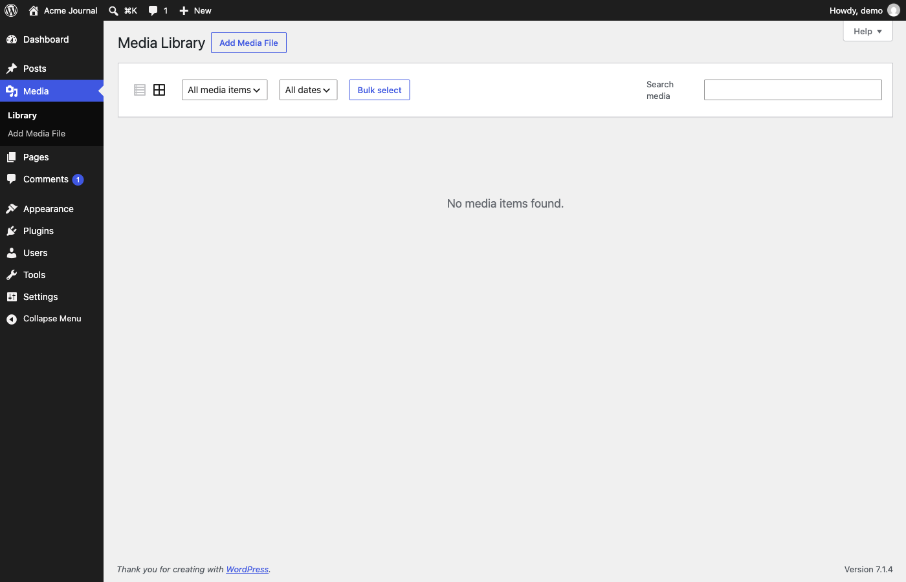

Screen spec · p006
Media Library
The library of uploaded files (images, audio, video, documents), shown in grid view; on this site it is empty and shows "No media items found."

View 1 capture →Spec items
| ID | Type | Spec | Condition | Evidence | Confidence | Notes |
|---|---|---|---|---|---|---|
SPEC-p006-01 | Display | The content area shows the message "No media items found." | No files have been uploaded | init | Verified | |
SPEC-p006-02 | Display | The toolbar has two view-switch icons (list view and grid view), with grid view selected. | Default view | init | Verified | Icon labels "List view" and "Grid view" come from the page text |
SPEC-p006-03 | List & search | The type filter defaults to "All media items" and offers "Images", "Audio", "Video", "Documents", "Spreadsheets", "Archives", "Unattached" and "Mine". | Always | init | Verified | Options come from the page text; the dropdown was not opened |
SPEC-p006-04 | List & search | The date filter shows only "All dates". | No files have been uploaded | init | Verified | Months probably appear once files exist |
SPEC-p006-05 | List & search | A "Search media" box sits at the right of the toolbar and has no submit button, so it probably filters as the user types. | Always | init | Inferred | The box is visible; the live-filter behaviour is inferred |
SPEC-p006-06 | Action | Pressing "Bulk select" probably switches the grid into a selection mode for deleting several files at once. | Always | - | Inferred | Not pressed |
SPEC-p006-07 | Action | Pressing "Add Media File" next to the heading probably opens an upload area on this screen or the Upload Media screen. | Always | - | Inferred | Not pressed |
About this screen
Purpose
Central place to browse, search and manage files that posts and pages can use, and the starting point for uploading new ones.
Shown when
Shown when "Media" > "Library" is chosen in the side menu (/wp-admin/upload.php). Probably limited to users who may upload files.
Who uses it and how
Authors and editors look for an existing file by type, month or keyword, open it to edit its details, or start an upload with "Add Media File".
Main features
- Grid and list views of uploaded files
- Filtering by file type and by month
- Keyword search
- Bulk selection
- "Add Media File" entry to uploading
UI elements and behavior
| Element | Behavior | Notes |
|---|---|---|
| "Add Media File" button | Starts an upload. | Next to the "Media Library" heading; not pressed |
| View-switch icons | Toggle between list view and grid view. | Grid is active |
| "All media items" dropdown | Filters by file type, attachment state or owner. | |
| "All dates" dropdown | Filters by upload month. | Only one option while the library is empty |
| "Bulk select" button | Probably enables multi-selection. | Not pressed |
| "Search media" box | Keyword search over the library. |
Input fields
| Field | Type | Required | Assumed validation | Notes |
|---|---|---|---|---|
| Filter by type | select | No | One of the nine listed options | Default "All media items" |
| Filter by date | select | No | "All dates" or a month | Only "All dates" here |
| Search media | search | No | Free-text keyword |
Usage flow
- Open "Media" > "Library".
- Narrow the files with the type and date filters or the search box.
- Click a file to see and edit its details (not observable while the library is empty).
- Press "Add Media File" to upload new files.
Navigation
| Trigger | Goes to | Notes |
|---|---|---|
| Side menu "Add Media File" | p007 Upload Media | |
| "Add Media File" button next to the heading | p007 Upload Media | Inferred; it may instead open an inline drop area on this screen |
| List-view icon | p006 Media Library | Probably reloads the same screen as a table |
Variants and business rules
States and variants
Only the empty grid view was captured. The populated grid, the list (table) view, the attachment details dialog and the bulk-select mode were not captured. This screen has a "Help" tab but no "Screen Options" tab in grid view.
Business rules and constraints
Files can be filtered by whether they are attached to content ("Unattached") and by uploader ("Mine"), which implies each file records its uploader and an optional parent post.
Open questions
- What the grid tiles and the attachment details dialog look like once files exist.
- Whether the chosen view (grid or list) is remembered per user.
- Whether authors see all files or only their own.
Auto-extracted data (headings, links, buttons, tables, click decisions)
Headings
- H1: Media Library
- H2: Filter media
- H2: Media list
Tables
-
Internal links
| Text | URL | Notes |
|---|---|---|
| Skip to main content | http://localhost:8899/wp-admin/upload.php#wpbody-content | |
| Skip to toolbar | http://localhost:8899/wp-admin/upload.php#wp-toolbar | |
| Dashboard | http://localhost:8899/wp-admin/index.php | |
| Home | http://localhost:8899/wp-admin/index.php | |
| Updates | http://localhost:8899/wp-admin/update-core.php | |
| Posts | http://localhost:8899/wp-admin/edit.php | |
| All Posts | http://localhost:8899/wp-admin/edit.php | |
| Add Post | http://localhost:8899/wp-admin/post-new.php | Excluded pattern: post-new\.php |
| Categories | http://localhost:8899/wp-admin/edit-tags.php?taxonomy=category | |
| Tags | http://localhost:8899/wp-admin/edit-tags.php?taxonomy=post_tag | |
| Media | http://localhost:8899/wp-admin/upload.php | |
| Library | http://localhost:8899/wp-admin/upload.php | |
| Add Media File | http://localhost:8899/wp-admin/media-new.php | |
| Pages | http://localhost:8899/wp-admin/edit.php?post_type=page | |
| All Pages | http://localhost:8899/wp-admin/edit.php?post_type=page | |
| Add Page | http://localhost:8899/wp-admin/post-new.php?post_type=page | Excluded pattern: post-new\.php |
| Comments 1 1 Comment in moderation | http://localhost:8899/wp-admin/edit-comments.php | |
| Appearance | http://localhost:8899/wp-admin/themes.php | |
| Themes | http://localhost:8899/wp-admin/themes.php | |
| Editor | http://localhost:8899/wp-admin/site-editor.php | |
| Fonts | http://localhost:8899/wp-admin/font-library.php | |
| Plugins | http://localhost:8899/wp-admin/plugins.php | |
| Installed Plugins | http://localhost:8899/wp-admin/plugins.php | |
| Add Plugin | http://localhost:8899/wp-admin/plugin-install.php | |
| Users | http://localhost:8899/wp-admin/users.php | |
| All Users | http://localhost:8899/wp-admin/users.php | |
| Add User | http://localhost:8899/wp-admin/user-new.php | |
| Profile | http://localhost:8899/wp-admin/profile.php | |
| Tools | http://localhost:8899/wp-admin/tools.php | |
| Available Tools | http://localhost:8899/wp-admin/tools.php | |
| Import | http://localhost:8899/wp-admin/import.php | |
| Export | http://localhost:8899/wp-admin/export.php | |
| Site Health 2 | http://localhost:8899/wp-admin/site-health.php | |
| Export Personal Data | http://localhost:8899/wp-admin/export-personal-data.php | Risky URL keyword: export |
| Erase Personal Data | http://localhost:8899/wp-admin/erase-personal-data.php | |
| Theme File Editor | http://localhost:8899/wp-admin/theme-editor.php | |
| Plugin File Editor | http://localhost:8899/wp-admin/plugin-editor.php | |
| Settings | http://localhost:8899/wp-admin/options-general.php | |
| General | http://localhost:8899/wp-admin/options-general.php | |
| Connectors | http://localhost:8899/wp-admin/options-connectors.php | |
| Writing | http://localhost:8899/wp-admin/options-writing.php | |
| Reading | http://localhost:8899/wp-admin/options-reading.php | |
| Discussion | http://localhost:8899/wp-admin/options-discussion.php | |
| Media | http://localhost:8899/wp-admin/options-media.php | |
| Permalinks | http://localhost:8899/wp-admin/options-permalink.php | |
| Privacy | http://localhost:8899/wp-admin/options-privacy.php | |
| Menu | http://localhost:8899/wp-admin/upload.php# | |
| About WordPress | http://localhost:8899/wp-admin/about.php | |
| About WordPress | http://localhost:8899/wp-admin/about.php | |
| Get Involved | http://localhost:8899/wp-admin/contribute.php | |
| ⌘K Open command palette | http://localhost:8899/wp-admin/upload.php# | |
| 1 1 Comment in moderation | http://localhost:8899/wp-admin/edit-comments.php | |
| New | http://localhost:8899/wp-admin/post-new.php | Excluded pattern: post-new\.php |
| Post | http://localhost:8899/wp-admin/post-new.php | Excluded pattern: post-new\.php |
| Media | http://localhost:8899/wp-admin/media-new.php | |
| Page | http://localhost:8899/wp-admin/post-new.php?post_type=page | Excluded pattern: post-new\.php |
| User | http://localhost:8899/wp-admin/user-new.php | |
| Howdy, demo | http://localhost:8899/wp-admin/profile.php | |
| demoEdit Profile | http://localhost:8899/wp-admin/profile.php | |
| Overview | http://localhost:8899/wp-admin/upload.php#tab-panel-overview | |
| Attachment Details | http://localhost:8899/wp-admin/upload.php#tab-panel-attachment-details | |
| Add Media File | http://localhost:8899/wp-admin/media-new.php | |
| Switch to the list view | http://localhost:8899/wp-admin/upload.php?mode=list | |
| List view | http://localhost:8899/wp-admin/upload.php?mode=list | |
| Grid view | http://localhost:8899/wp-admin/upload.php?mode=grid |
External links
| Text | URL |
|---|---|
| WordPress.org | https://wordpress.org/ |
| Documentation | https://wordpress.org/documentation/ |
| Learn WordPress | https://learn.wordpress.org/ |
| Support | https://wordpress.org/support/forums/ |
| Feedback | https://wordpress.org/support/forum/requests-and-feedback |
| Acme Journal | http://localhost:8899/ |
| Visit Site | http://localhost:8899/ |
| Log Out | http://localhost:8899/wp-login.php?action=logout&_wpnonce=3c75f1926c |
| Documentation on Media Library | https://wordpress.org/documentation/article/media-library-screen/ |
| Support forums | https://wordpress.org/support/forums/ |
| WordPress | https://wordpress.org/ |
| Please log in again. | http://localhost:8899/wp-login.php |
Safety decision for clickable elements
| Element | Type | Decision | Reason | Selector |
|---|---|---|---|---|
| Skip to main content | a | Skip | Not clicked (pages are opened by URL) | |
| Skip to toolbar | a | Skip | Not clicked (pages are opened by URL) | |
| Collapse Menu | button | Skip | Not clicked (pages are opened by URL) | |
| ⌘K Open command palette | menuitem | Skip | Not clicked (pages are opened by URL) | |
| Help | button | Skip | Not clicked (pages are opened by URL) | |
| Add Media File | button | Skip | Not clicked (pages are opened by URL) | |
| Bulk select | button | Skip | Not clicked (pages are opened by URL) |
Body text (start)
Skip to main content Skip to toolbar Dashboard Home Updates Posts All Posts Add Post Categories Tags Media Library Add Media File Pages All Pages Add Page Comments 1 1 Comment in moderation Appearance Themes Editor Fonts Plugins Installed Plugins Add Plugin Users All Users Add User Profile Tools Available Tools Import Export Site Health 2 Export Personal Data Erase Personal Data Theme File Editor Plugin File Editor Settings General Connectors Writing Reading Discussion Media Permalinks Privacy Collapse Menu About WordPress Acme Journal ⌘K Open command palette 1 1 Comment in moderation New Howdy, demo Help Media Library Add Media File Filter media List view Grid view Filter by type All media items Images Audio Video Documents Spreadsheets Archives Unattached Mine Filter by date All dates Bulk select Search media Media list No media items found. Thank you for creating with WordPress. Version 7.1.4